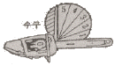
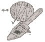
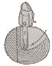
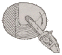
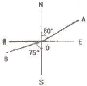
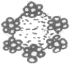

산림기사 (2011-06-12 기출문제)
1과목: 조림학
1. 기계적인 결실촉진 방법과 가장 거리가 먼 것은?
- 환상박피(環狀剝皮)
- 전지(剪枝)
- 삽목(揷木)
- 단근처리(斷根處理)
(정답률: 65%)

2. 다음 수종 중 종자 발아시험에 있어 조사 일수가 가장 많이 걸리는 수종은?
- 소나무, 해송
- 편백, 화백
- 느티나무, 옻나무
- 오리나무, 삼나무
(정답률: 65%)
3. 토양의 양이온치환능력을 M.E.(milliequivalent:Meq)의 단위로 나타낼 때, 원자량이 40이고 원자가가 2인 칼슘(Ca)의 양이온 치환능력 1M.E.의 양은 몇 g인가?
- 0.02g
- 0.04g
- 0.4g
- 0.8g
(정답률: 56%)
4. 종자의 품질을 알아보기 위해 순정종자의 무게를 측정한 결과 종자시료 100g 중에서 순정종자는 50g이었다. 또한 임의로 160개의 순정종자만을 골라 발아를 시켜보았더니 80개가 발아하였다. 이러한 종자의 효율은?
- 25%
- 50%
- 75%
- 80%
(정답률: 74%)
5. 다음 중 묘목 가식의 적지로 가장 좋은 곳은?
- 부식토
- 습지
- 배수가 양호한 사질양토
- 유기질 비료가 많은 땅
(정답률: 89%)
6. 식재조림에 따른 묘목선정 시 주의할 내용으로 틀린 것은?(오류 신고가 접수된 문제입니다. 반드시 정답과 해설을 확인하시기 바랍니다.)
- 묘목의 동아가 자라지 않고 단단하여야 하며 흰색의 세근이 4~5mm 이상 자라지 않은 상태여야 한다.
- 묘목은 약간 건조한 상태에서 저장하여야 한다.
- 냄새를 맡아보아서 악취가 나는 묘목은 조림대상에서 제외한다.
- 묘목의 뿌리나 줄기를 손톱이나 칼로 약간 벗겨보면 습기가 있고 백색으로 윤기가 돌아야 한다.
(정답률: 81%)
7. 전나무의 속명으로 맞는 것은?
- Juniperus
- Pinus
- Populus
- Abies
(정답률: 82%)
8. 다음 갱신법에 관한 설명으로 맞는 것은?
- 소벌구의 모양은 일반적으로 원형이다.
- 소벌구는 측방성숙임분의 영향을 받는다.
- 산벌은 임목을 한꺼번에 벌채하는 것이다.
- 모수는 갱신될 임지에 식재나무를 공급하기 위한 묘목이다.
(정답률: 54%)
9. 활엽수인 경우 잡목 솎아베기의 효과를 높일 수 있는 적합한 작업 시기는?
- 3~5월
- 6~8월
- 9~10월
- 12~2월
(정답률: 70%)
10. 다음 접목에 대하여 기술된 내용 중 바르게 설명하고 있는 것은?
- 접목을 하면 대목과 접수의 유전형질이 동일해진다.
- 바이러스는 접목된 부위를 통해 이동할 수 없다.
- 전이성불화합성(전이성불화합성)은 중간대목을 사용하여 극복할 수 있다.
- 접목 활착을 위해서는 대목과 접수의 형성층을 최대한 가깝게 밀착시키는 것이 중요하다.
(정답률: 86%)
11. 모수의 조건에 대한 설명으로 맞는 것은?
- 열세목 가운데서 고른다.
- 유전적 형질과는 무방하다.
- 풍도에 저항력이 높아야 한다.
- 종자를 적게 생산하는 개체를 남긴다.
(정답률: 91%)
12. 덩굴치기에 대한 설명으로 잘못된 것은?
- 덩굴식물에 의한 피해는 수관피복형과 수관압박형이 있다.
- 덩굴식물은 울폐된 산림지역에 많다.
- 덩굴치기의 시기는 7월경이 좋다.
- 칡은 무성생식으로도 잘 번식한다.
(정답률: 74%)
13. 다음 중 결핍증상이 오래된 잎에서부터 시작되고 줄기가 가늘고 잎이 작아지며 잎 전체가 황록색이 되게 하는 원소는?
- 질소
- 철
- 칼륨
- 칼슘
(정답률: 63%)
14. 묘목 양성시 해가림을 해 주어야 할 수종은?
- 은행나무, 밤나무
- 벚나무, 아까시나무
- 잣나무, 전나무
- 소나무, 주목
(정답률: 76%)
15. 침엽수 채종림에 적합한 나무의 조건이 아닌 것은?
- 가지가 굵어야 한다.
- 자연 낙지가 잘 되어야 한다.
- 줄기가 곧아야 한다.
- 지하고가 높아야 한다.
(정답률: 80%)
16. 수목의 측아(側芽) 발달을 억제하여 정아우세를 유지시켜 주는 호르몬은?
- 옥신(auxin)
- 지베렐린(gibberellin)
- 사이토키닌(cytokinin)
- 아브시스산(abscisic acid)
(정답률: 79%)
17. 간벌의 효과와 거리가 먼 것은?
- 벌기 수확이 양적, 질적으로 높아진다.
- 생산될 목재의 형질이 향상된다.
- 조기에 간벌 수확이 얻어진다.
- 수고생장을 촉진하여 연륜폭이 좁아진다.
(정답률: 86%)
18. 간이 산림토양조사에 의하여 적수를 선정할 때 사용하지 않는 인자는?
- 토색
- 토심
- 지형
- 토성
(정답률: 67%)
19. 폐광지의 임지를 보호하기 위해 비료목을 심으려고 할 때 어느 수종을 선택하면 좋은가?
- 소나무, 해송
- 잣나무, 전나무
- 족제비싸리, 은백양
- 아까시나무, 오리나무류
(정답률: 86%)
20. 용재 생산을 위한 대규모 경제림 조성을 기본 목표로 했던 국가산림사업 시기는?
- 제1차 치산녹화 10개년 계획(1973 ~ 1978)
- 제2차 치산녹화 10개년 계획(1979 ~ 1987)
- 제3차 국가산림계획(1988 ~ 1997)
- 제4차 산림기본계획(1998 ~ 2007)
(정답률: 76%)
2과목: 산림보호학
21. 낙엽송 잎떨림병의 병징이 가장 뚜렷하게 나타나는 시기는?
- 3 월
- 5 월
- 9 월
- 12 월
(정답률: 71%)
22. 보르도액을 반복하여 사용하면 어떤 성분이 토양에 축적되어 수목에 독성을 나타낼 수 있는가?
- 철
- 붕소
- 망간
- 구리
(정답률: 76%)
23. 다음의 병해 중 바람이 많이 부는 산림지역에서 피해가 급격히 늘어나는 것은?
- 소나무 혹병
- 낙엽송 가지끝마름병
- 느티나무 갈색무늬병
- 뿌리혹병(根頭癌腫病)
(정답률: 77%)
24. 진딧물이나 깍지벌레 등이 기생하는 나무에서 흔히 관찰되는 수목병은?
- 빗자루병
- 그을음병
- 흰가루병
- 줄기마름병
(정답률: 84%)
25. 소나무재선충병의 매개충인 솔수염하늘소의 성충 우화시기는?
- 1~3월
- 3~5월
- 5~8월
- 9~10월
(정답률: 80%)
26. 다음 중 기주범위가 가장 넓은 다범성 병균은?
- 잎마름병균
- 아밀라리아뿌리썩음병균
- 녹병균
- 버즘나무 탄저병균
(정답률: 56%)
27. 볕데기(sun scorch)가 잘 일어나지 않는 경우는?
- 서남향이나 서향에 있는 수목
- 산림울폐가 갑자기 깨어졌을 때
- 수피가 평활하고 코르크층이 발달되지 않는 수종
- 정자나무같이 수간 하부까지 지엽이 번성한 고립목
(정답률: 79%)
28. 각종 해충의 생물적 방제에 이용되는 것이 아닌 것은?
- 기생곤충
- 훈증제
- 포식곤충
- 병원미생물
(정답률: 85%)
29. 임업해충 중 충영을 만들고 그 속에서 기주를 가해하는 해충은?
- 텐트나방
- 솔잎혹파리
- 오리나무잎벌레
- 미국흰불나방
(정답률: 84%)
30. 유효성분이 물에 녹지 않으므로 유기용매에 유효 성분을 녹여 만드는 농약은?
- 유제(乳劑)
- 액제(液劑)
- 수용제(水溶劑)
- 수화제(水和劑)
(정답률: 84%)
31. 다음 중에서 대추나무 빗자루병의 방제에 가장 적합한 약제는?
- 페니실린
- 석유유황합제
- 석회보르도액
- 옥시테트라사이클린
(정답률: 93%)
32. 녹병균은 5가지 포자형태를 가진다. 여름포자 형태가 없는 녹병은?
- 잣나무 털녹병
- 향나무 녹병
- 전나무 잎녹병
- 포플러 잎녹병
(정답률: 65%)
33. 연해(煙害)의 방제법으로 가장 옳은 것은?
- 공해업소의 굴뚝 높이는 10m 이상이면 된다.
- 질소를 사용하여 연해 물질을 흡수 중화시킨다.
- 연해의 염려가 있는 곳은 숲을 교림(喬林)으로 한다.
- 토양관리에 힘쓰며, 특히 석회질비료를 주어야 한다.
(정답률: 67%)
34. 야생동물의 피해를 감소하기 위해 곤충이나 지렁이 등을 구제하여야 하는 포유류는?
- 곰
- 멧돼지
- 사슴
- 두더지
(정답률: 93%)
35. 종자전염을 하는 수목병은?
- 소나무혹병
- 포플러모자이크병
- 낙엽송잎떨림병
- 오리나무갈색무늬병
(정답률: 65%)
36. 잣나무 털녹병균이 기주교대를 하는 식물은 무엇인가?
- 매발톱
- 애기똥풀
- 송이풀
- 참나무류
(정답률: 93%)
37. 다음 중 산림화재 시 내화력(耐火力)이 가장 약한 수종으로 묶인 것은?
- 소나무, 녹나무
- 화백, 아왜나무
- 사철나무, 회양목
- 은행나무, 대왕송
(정답률: 78%)
38. 겨울포자가 발아해서 형성되는 포자명은?
- 녹포자
- 여름포자
- 녹병포자
- 담자포자
(정답률: 75%)
39. 수간 천공성 산림해충에 해당하지 않는 것은?
- 소나무좀
- 북방수염하늘소
- 박쥐나방
- 미국흰불나방
(정답률: 66%)
40. 대부분의 식물병원 세균이 가지는 균의 형태는?
- 구형(球形)
- 간상형(桿狀形)
- 콤마형
- 나선형(螺旋形)
(정답률: 78%)
3과목: 임업경영학
41. 환경임업의 일환인야생동물의 보육에 대한 설명으로 틀린 것은?
- 동기(冬期)에 사료급여를 실시한다.
- 야생동물 서식밀도는 최고로 유지한다.
- 임간초지(林間草地)를 조성해야 한다.
- 서식지는 열매 맺는 수종이 많으며, 혼효림이 좋다.
(정답률: 81%)
42. 형수를 사용해서 입목의 재적을 구하는 방법을 형수법(Form factor method)이라고 하는데, 비교원주의 직경 위치를 최하단부에 정해서 구한 형수를 무엇이라 하는가?
- 단목형수
- 흉고형수
- 절대형수
- 정형수
(정답률: 65%)
43. 법정축적법의 일종인 kameraltaxe 법에 의하여 수확조정을 하고자 할 때 표준연벌채량의 계산인자가 아닌 것은?
- 현실축적
- 갱정기
- 경리기외 편입기간
- 법정축적
(정답률: 80%)
44. 자연휴양림의 입지조건을 수요와 공급 측면으로 구분할 때 다음 중 수요측면에서의 자연휴양림 입지조건이 아닌 것은?
- 다수 국민이 쉽게 접근 또는 이용할 수 있는 지역의 산림
- 배후 도시상황ㆍ거주인구ㆍ기존시설 등의 사회경제적 레크리에이션(recreation) 수요에 대응되는 곳
- 해당 산림의 자연휴양림적 이용과 목재생산과의 합리적 조정을 도모할 수 있는 곳
- 해당 산림 상태와 각종 시설과의 조화를 도모하면서 풍치적 시업을 하여 자연휴양적 이용이 가능한 지역
(정답률: 63%)
45. 다음 중 시장가역산법으로 임목가를 평정할 때 필요치 않은 인자는?
- 집재비
- 운반비
- 조림 및 육림비
- 벌목조재비
(정답률: 65%)
46. 대학학술림에서는 임도개설을 위하여 3000만원을 투자하여 포크레인을 구입하였는데 이 포크레인의 수명은 5년이고 폐기 이후의 잔존가치는 없다고 한다. 이 투자에 의하여 5년 동안 해마다 720만원의 순이익을 얻을 수 있다면 이 사업의 투자이익률은 몇 %인가? (단, 감가상각비 계산은 정액법을 적용한다.)
- 36 %
- 48 %
- 64 %
- 72 %
(정답률: 54%)
47. 임업 이율은 보통 이율보다 낮게 책정해야 한다고 주장한 대표적인 학자 ENDRESS가 그 이유로 제시한 임업경영의 특성에 포함되지 않는 것은?
- 산림소유의 안정성
- 산림수입의 고소득성
- 산림관리경영의 간편성
- 문화발전에 따른 이율의 저하
(정답률: 63%)
48. 국유림경영계획을 작성할 때 위치도에 표시되지 않는 것은?
- 영급
- 임상
- 임도
- 미사업지
(정답률: 72%)
49. 농업이나 축산 또는 기타 사업을 하면서 여력을 이용하여 임업을 경영하는 형태는?
- 농가임업
- 부업적 임업
- 겸업적 임업
- 주업적 임업
(정답률: 77%)
50. 경영자가 관리회계에서 다루는 문제 중 예정된 원가와 실제로 발생한 원가사이에 어떠한 차이가 있으며 그 원인이 무엇인가 등을 검토하는 것을 무엇이라 하는가?
- 원가통제
- 원가계산
- 업적평가
- 계획수립
(정답률: 68%)
51. 단면적 상수(BAF)가 4인 릴라스코프(Relascope)를 사용하여 8개소를 측정한 결과, 측정된 임목의 본수는 총 64본이었다. 임분의 평균수고는 12m, 임분 형수는 0.50 인 이 임분의 ha당 단면적합계는 몇 m2인가?
- 32m2
- 48 m2
- 64 m2
- 96 m2
(정답률: 34%)
52. 흉고직경 20cm, 수고 10m 인 입목의 재적이 약 0.14m3로 계산되었다. 재적계산에 적용된 형수는 약 얼마인가?
- 0.30
- 0.40
- 0.45
- 0.55
(정답률: 61%)
53. 임업경영의 특성 중 임업의 경제적 특성에 해당되지 않는 것은?
- 임목은 무겁고 부피가 크기 때문에 운반비가 많이 든다.
- 삼림은 임산물을 생산할 뿐만 아니라 공익적 기능이 크므로 경영에 있어 제약성이 따르기 때문에 임업 경영에 지장을 주는 경우가 있다.
- 임업의 생산요소인 노동ㆍ자본ㆍ임지의 활용상태가 간단하다.
- 삼림은 면적이 넓을 뿐만 아니라 지형이 험하여 인력으로 생육환경을 조절한다는 것은 대단히 어렵다.
(정답률: 49%)
54. 휴양자원의 이용량과 그 영향을 바르게 설명한 것은?
- 휴양자원이 받는 영향은 이용초기에는 적지만 이용량이 많아져도 그 영향의 정도가 더욱 적어진다.
- 휴양자원이 받는 영향은 이용초기에는 적지만 이용량이 많아질수록 그 영향의 정도가 커진다.
- 휴양자원이 받는 영향은 이용초기에는 크지만 이용량이 많아질수록 그 영향의 정도가 적어진다.
- 휴양자원이 받는 영향은 이용초기에는 크지만 이용량이 많아져도 그 영향의 정도가 커진다.
(정답률: 65%)
55. 임지를 취득한 후 조림 등 임목 육성에 알맞은 상태로 개량하는데 소요되는 모든 비용의 후가에서 그동안 수입의 후가를 공제한 가격을 무엇이라 하는가?
- 임지기망가
- 임지비용가
- 임목기망가
- 임지매매가
(정답률: 67%)
56. 적정 휴양수용력의 정의로서 가장 적합한 것은?
- 관리자에게 최대의 이익을 가져다 주는 수용력
- 이용자에게 최대의 편익을 가져다 주는 수용력
- 물리적 환경의 질을 저하시키지 않는 수용력
- 물리적 환경과 이용자의 질을 저하시키지 않고 특정기간 동안 휴양자원이 수용할 수 있는 수용력
(정답률: 87%)
57. 휴양림의 수용력 관리기법 중 직접기법의 수단에 해당하는 것은?
- 요금부과
- 정보제공
- 물리적 변형
- 규정의 부과
(정답률: 59%)
58. Glaser식에 대한 설명으로 옳은 것은?
- 중령급 입목에 적용한다.
- 이율을 사용하므로 주관성이 개입된다.
- 복리계산을 하기 때문에 복잡하다.
- 벌기가 지난 임목의 가치 측정에 적당한 방법이다.
(정답률: 81%)
59. 정적임분생장모델의 가장 간단한 형태에 해당하는 것은?
- 산림조사부
- 확률밀도함수
- 수확표
- 누적밀도함수
(정답률: 83%)
60. 임업자산의 유형과 그 구성요소의 연결이 틀린 것은?
- 유동자산 - 비료
- 유동자산 - 현금
- 임목자산 - 산림축적
- 고정자산 - 묘목
(정답률: 86%)
4과목: 임도공학
61. 임지는 하부로부터 개발해야 하므로 임지개발의 중추적인 역할을 담당하는 산악지대 임도노선형은 무엇인가?
- 사면임도
- 능선임도
- 산복임도
- 계곡임도
(정답률: 52%)
62. 평판측량에서 측량지역의 내부 또는 외부에 한 점을 정하고 주위 넓은 방향으로 측선 방위와 길이를 관측하여 측량하는 방법은?
- 교회법
- 전진법
- 방사법
- 절선법
(정답률: 85%)
63. 목재의 재질과 노동사정을 고려할 때 가장 적합한 벌목 시기는 언제인가?
- 가을
- 겨울
- 여름
- 봄
(정답률: 79%)
64. 암석을 폭파하기 위한 천공에 사용하는 착암기가 아닌 것은?
- 리퍼
- 왜건드릴
- 잭해머
- 크롤러드릴
(정답률: 75%)
65. 다음 중 임도설계의 업무순서로 맞는 것은?
- 예비조사 → 예측 → 답사 → 실측 → 설계도작성 → 공사수량산출 → 설계서작성
- 예비조사 → 답사 → 예측 → 실측 → 공사수량산출 → 설계도작성 → 설계서작성
- 예비조사 → 답사 → 예측 → 실측 → 설계도작성 → 공사수량산출 → 설계서작성
- 답사 → 예비조사 → 예측 → 실측 → 공사수량산출 → 설계도작성 → 설계서작성
(정답률: 72%)
66. 콤파스 측량을 할 때 관측하지 않아도 되는 것은?
- 거리
- 방위
- 방위각
- 표고
(정답률: 74%)
67. 다음 중 연암 또는 단단한 지반의 굴착에 적당한 산림토목 공사용 기계는?
- 리퍼불도저(ripper bulldozer)
- 머캐덤롤러(macadam roller)
- 모터그레이더(Motor grader)
- 로더(loader)
(정답률: 83%)
68. 어떤 측점에서부터 차례로 측량을 하여 최후에 다시 출발한 측점으로 되돌아오는 측량방법으로 소규모의 단독적인 측량 때 많이 이용되는 트래버스 방법은?
- 폐합 트래버스
- 결합 트래버스
- 개방 트래버스
- 다각형 트래버스
(정답률: 80%)
69. 노선측량의 결과 교각이 120°인 교각점에 곡선반지름 30m인 단곡선을 설치하고자 한다. 이 교각점에 설치될 곡선의 길이는 약 몇 m인가?
- 15.7 m
- 31.4 m
- 62.8 m
- 94.2 m
(정답률: 40%)
70. 산림기반시설의 설계 및 시설기준에서 정하고 있는 배수 구조물의 통수단면 설계내용으로 맞는 것은?
- 50년 빈도 확률강우량에 의한 최대홍수유출량의 1.2배
- 70년 빈도 확률강우량에 의한 최대홍수유출량의 1.5배
- 100년 빈도 확률강우량에 의한 최대홍수유출량의 1.2배
- 100년 빈도 확률강우량에 의한 최대홍수유출량의 1.5배
(정답률: 76%)
71. 임도 및 일반도로 시공시 일반적으로 사용되지 않는 장비는 어느 것인가?
- 불도우저
- 굴착기
- 모터그레이더
- 기중기
(정답률: 82%)
72. 중경목을 벌도하려고 할 때 중경목의 추구요령이 잘 표현된 그림은 어느 것인가?




(정답률: 72%)
73. 임도교량 작업 시 주재료인 콘크리트의 물 함량을 아주 높게 하여 작업을 용이하게 하려고 할 때 어떠한 문제점이 발생하는가?
- 시멘트 량이 줄어든다.
- 콘크리트 강도가 낮아진다.
- 배합이 골고루 되지 않는다.
- 작업비가 높아진다.
(정답률: 81%)
74. 임도 시공시 현장감독관이 현장에 비치하고 기록ㆍ 관리하여야 하는것이 아닌것은?
- 재료시험표
- 반입재료검사부
- 자재수불부
- 작업일지
(정답률: 68%)
75. 강우에 의한 토양침식의 발달과정으로 옳은 것은?
- 우격침식 → 면상침식 → 누구침식 → 구곡침식
- 우격침식 → 누구침식 → 면상침식 → 구곡침식
- 우격침식 → 구곡침식 → 누구침식 → 면상침식
- 우격침식 → 누구침식 → 구곡침식 → 면상침식
(정답률: 89%)
76. 설계속도가 30km/h, 가로 미끄럼에 대한 노면과 타이어의 마찰계수가 0.15, 노면의 횡단 물매가 5%일 경우 곡선반지름은 약 몇 m 인가? (단, 소수점 이하는 생략한다.)
- 25 m
- 30 m
- 35 m
- 40 m
(정답률: 63%)
77. 다음 그림에서 OA의 방위는 N60°E 이고, OB의 방위는 S75°W이다. 이 때 ∠AOB는 얼마인가?

- 1⑤°
- 135°
- 165°
- 195°
(정답률: 32%)
78. 횡단기울기의 기준에 대한 설명으로 맞는 것은?
- 비포장 노면의 경우 3~5%, 포장 노면의 경우 2~3%
- 비포장 노면의 경우 2~3%, 포장 노면의 경우 1~2%
- 비포장 노면의 경우 3~5%, 포장 노면의 경우 1.5~2%
- 비포장 노면의 경우 2~3%, 포장 노면의 경우 1.5~2%
(정답률: 65%)
79. 임도의 기능에 대한 설명 중 바람직하지 않은 것은?
- 임도는 전통적 기능인 목재수송 전용도로로서의 기능을 담당해야 한다.
- 자연 휴양림 조성과 관련하여 임도는 휴양림 도로로서의 기능도 담당해야 한다.
- 농산촌 지역 개발과 관련하여 농촌마을의 연결기능도 가질 수 있어야 한다.
- 임도는 산림이 가진 다목적 기능을 더욱 잘 발휘할 수 있도록 설계되어야 한다.
(정답률: 67%)
80. 임도의 합성물매는 12%로 설정하고, 외쪽물매를 6%로 적용한다면 종단물매는 약 몇 %가 적당한가?
- 8 %
- 10 %
- 12 %
- 14%
(정답률: 71%)
5과목: 사방공학
81. 토양침식 형태 중에서 중력침식과 거리가 먼 것은?
- 붕괴형 침식
- 지활형 침식
- 우수 침식
- 사태형 침식
(정답률: 73%)
82. 야계 현황을 조사한 결과 조도계수는 0.⑤, 통수단면적이 3m2, 윤변이 1.5m, 수로 물매가 2% 일 때 Manning의 평균유속공식을 이용하여 유량을 계산하면 약 몇 m3/s인가?
- 4.49
- 0.49
- 13.47
- 1.35
(정답률: 34%)
83. 돌쌓기기슭막이 공법의 돌쌓기 표준 물매는?
- 찰쌓기 1 : 0.3, 메쌓기 1 : 0.5
- 찰쌓기 1 : 1.3, 메쌓기 1 : 0.5
- 찰쌓기 1 : 0.3, 메쌓기 1 : 1.5
- 찰쌓기 1 : 1.3, 메쌓기 1 : 1.5
(정답률: 74%)
84. 찰쌓기 공사에서 지름 약 3 cm 의 PVC 파이프로 물빼기 구멍을 설치하는데 1개당 적합한 돌쌓기 면적은 몇 m2인가?
- 0.5~1 m2
- 2~3 m2
- 5~7 m2
- 10~13 m2
(정답률: 71%)
85. 황폐 계천의 사방공작물 중 횡(橫)공작물이 아닌 것은?
- 사방댐
- 골막이(구곡막이)
- 낮은 바닥막이
- 둑쌓기
(정답률: 60%)
86. 일반묘 및 포트묘 식재공법에서 식재수종의 선정시 갖추어야 할 조건 중 직접적인 사항이 아닌 것은?
- 미관이 좋은 수종
- 토양개량효과가 기대되는 수종
- 생장력이 왕성하여 잘 번무하는 수종
- 뿌리의 뻗음이 좋고 토양의 긴박능력이 큰 수종
(정답률: 75%)
87. 벌목과 집적만을 수행하는 다목적 임목수확기계는?
- 프로세서
- 하베스터
- 펠레번쳐
- 스키더
(정답률: 38%)
88. 다음 그림의 아이어 로프의 구성으로 알맞은 것은?

- 6본선 7꼬임 중심섬유
- 7본선 6꼬임 중심섬유
- 14본선 3꼬임 중심섬유
- 3본선 14꼬임 중심섬유
(정답률: 64%)
89. 주로 땅깎기 비탈에 흙이 떨어지지 않은 반떼를 수평방향으로 줄로 붙여서 활착 녹화시키는 공법은?
- 줄떼다지기공법
- 줄떼붙이기공법
- 줄떼심기공법
- 줄떼뿌리기공법
(정답률: 88%)
90. 황폐지 중에서 초기황폐지 단계에서 복구되지 않으면 점점 더 급속히 악화되어 가까운 장래에 민둥산이나 붕괴지가 될 위험성이 있는 상태를 무엇이라 하는가?
- 척암임지
- 임간나지
- 황폐이행지
- 특수황폐지
(정답률: 77%)
91. 정사울타리를 설치할 때 표준높이는 몇 m인가?
- 1~2m
- 2~3m
- 3~4m
- 4~5m
(정답률: 65%)
92. 중력댐의 안정에 대한 설명으로 틀린 것은?
- 제저에 발생하는 최대압축응력은 지반의 허용압축강도보다 작아야 안전하다.
- 합력의 작용선이 제저(堤底)의 중앙 1/3 범위 내에 있어야 전도되지 않는다.
- 제저에 발생하는 최대압축력 및 인장응력은 허용압축 및 인장강도를 초과하여야 안전하다.
- 수평분력의 총합과 수직분력의 총합의 비가 제저와 기초지반 사이의 마찰계수보다 적으면 활동하지 않는 다.
(정답률: 69%)
93. 도시림 생태계 복원에서 식생 복원을 위하여 자생 수종의 생태적 특성을 토대로 훼손지 복구 또는 복원에만 국한해야 할 지역은?
- 자연식생녹지
- 인공조림녹지
- 도시시설녹지
- 반자연식생녹지
(정답률: 80%)
94. 콘크리트블록 또는 FRP같은 경량 블록으로 처리하기 곤란한 붕괴위험 비탈에 직접 거푸집을 설치하고 콘크리트 치기를 하여 비탈 안정을 위한 틀을 만들어 내부를 작은 돌이나 흙으로 채워 녹화하는 비탈 안정 공법을 무엇이라 하는가?
- 비탈 격자틀붙이기공법
- 비탈 힘줄박기공법
- 비탈 블록붙이기공법
- 비탈 지오웨브공법
(정답률: 79%)
95. 견고를 요하는 돌쌓기공사에 특히 메쌓기공법에 사용될 수 있도록 특별한 규격으로 다듬은 석재는?
- 견치돌
- 막깬돌
- 야면석
- 호박돌
(정답률: 89%)
96. 등산로 훼손에 영향을 미치는 인위적 요인에 해당하는 것은?
- 기상
- 이용행태
- 지형
- 식생
(정답률: 87%)
97. 산비탈면에서 붕괴에 관여하는 주요 요인과 거리가 먼 것은?(오류 신고가 접수된 문제입니다. 반드시 정답과 해설을 확인하시기 바랍니다.)
- 지형
- 지질
- 중력
- 임상
(정답률: 31%)
98. 돌쌓기 공종의 시공요령을 바르게 설명한 것은?
- 메쌓기를 할 때는 물빼기 구멍을 반드시 설치하여야 한다.
- 돌쌓기의 비탈이 1:1이상일 때 돌쌓기라 한다.
- 메쌓기를 할 경우에는 뒷채움 자갈을 채우지 않아도 된다.
- 토압이 증가될 염려가 있는 장소는 찰쌓기를 한다.
(정답률: 52%)
99. 토양수의 형태적 분류에서 토양입자에 매우 큰 분자 인력에 의하여 얇은 층으로 흡착되어 있는 물은?
- 결합수
- 흡습수
- 모관수
- 중력수
(정답률: 63%)
100. 훼손된 등산로를 복구할 때 고려 사항이 아닌 것은?
- 보행자 접근 동선 및 보행 동선의 조정
- 체계적인 안내 시스템에 의한 명확한 동선의 설정
- 훼손된 산림의 순찰 및 정비
- 동선 주연부에 대한 획일적인 식생 유도
(정답률: 87%)